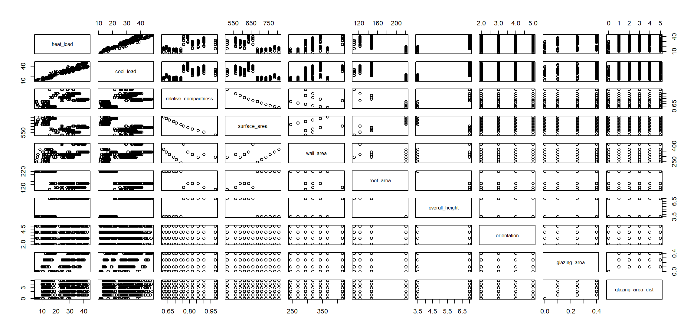
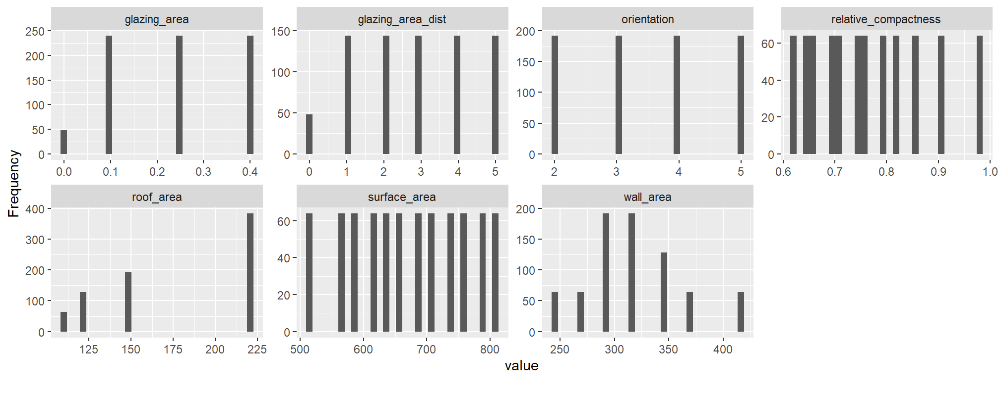
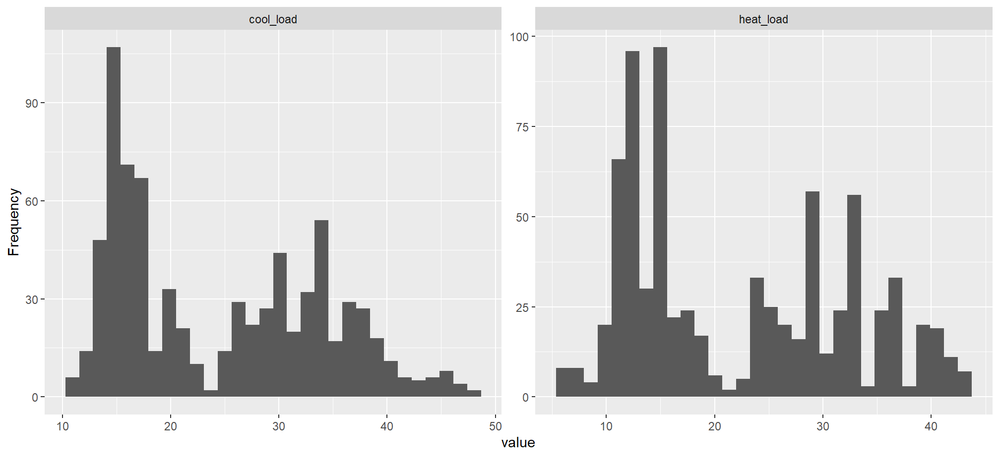

Project Overview
Column
Goal
In this final project, we perform regression analysis using building specifications to estimate energy performance of buildings (EPB), specifically heat load and cool load. The dataset used in this work is a publicaly available simulated dataset found in the UC Irvine Machine Learning Repository (dataset link). In this particular dataset, there are 12 different building shapes, differing with respect to the glazing area, glazing area distribution, and orientation, as well as some other variables.
Dataset Overview
In total, there are 768 observations (buildings). There are 8 predictor variables and 2 response variables. Figure 1 shows a basic summary of the full dataset. From this plot, we find that the entire dataset is clean with no missing data. This is a simulated dataset that was created to investigate the effect of eight input variables on determining two output variables. The “Dataset Variables” table shows the variable names and number of possible values.
Simulated Building Information
There are 12 simulated building forms in total, composed of 18 “elements.” The following assumptions are made for all buildings:
Location and occupants: Residential building in Athens, Greece, with 7 residents
Fixed activity of 70 Watts
All internal and thermal properties are the same
\((12 \text{ building forms } \times 3 \text{ glazing area variations } \times 5 \text{ glazing area distributions } \times 4 \text{ orientations }) + (12 \text{ building forms } \times 4 \text{ orientations w/o glazing}) = 768 \text{ buildings}\)
Project Focus
This project focuses on a specific claim made in the original work: classical regression analysis is insufficient for modeling with this dataset, hence favoring IRLS and RF. This final project aims to verify the claim. The end goal is to determine if the claim is true, and if so, how much better is IRLS and RF than classical regression analysis and modeling? This will be done by comparing the provided mean absolute error (MAE), mean square error (MSE), and mean relative error (MRE) values in the original work and comparing it with those found in this project.
The first step is perform exploratory data analysis (EDA). Then, the best set of variables to use for modeling heating and cooling loads will be found using several processes. This will be done using the entire dataset. Once the variables for each model have been chosen, the same experiment conducted in the original work to determine the MAE, MSE, and MRE of the IRLS and RF models will be performed. This involves many repetitions of shuffling the dataset, creating training and testing splits, fitting models, and measuring errors. This will be discussed in further detail in the “Model Analysis” section.
Before EDA, we perform a brief introduction of IRLS and RF to better understand how each works. This is done in the “Background” section.
Background
Column
Overview
In the original work (Tsanas and Xifara 2012), statistical machine learning methods are used to train and test models on the dataset to predict heat and cool loads given all predictors. The reason for investigating statistical machine learning for this specific problem is that classical least squares regression techniques is unable to sufficiently model and capture the non-linear nature of the problem. Two methods are explored in the original work: iteratively reweighted least squares (IRLS) and random forest (RF).
In addition, we briefly discuss why Spearman rank correlation is used instead of Pearson correlation.
Iteratively Reweighted Least Squares (IRLS)
IRLS is simpler than RF and is a commonly used regression method. It works by adjusting the weights of a regression models coefficients to reduce the impact of outliers in data. This ultimately leads to an improved least squares estimate and overall model fit. More information on IRLS can be found in literature (Bishop and Nasrabadi 2006; Tsanas et al. 2009). However, in applications where residuals do not follow a Gaussian distribution, IRLS can struggle to sufficiently model complex relationships. For this reason, RF is also used for regression analysis with this dataset.
A basic flowchart of IRLS is shown in Figure 2. The flowchart was generated using Google Gemini.
Random Forst (RF)
RF is an extension of the classification and regression tree (CART). CART is a nonlinear method designed for classification and regression analysis. When response variables are categorical, it serves as a classification model. It can also be used to build regression trees when predictors are continuous, numeric values.
The concept of CART is to repeatedly split an input feature space (predictors) into smaller sub-regions. The feature space is iteratively split into smaller and smaller sub-regions until it is not possible to split it any more, or some criterion to stop splitting has been met. RF is a collection of many “trees,” or a collection of CART models. To obtain this collection of models, a random subset of the variables are chosen for each model, and then the CART procedure is performed for each tree.
A simple illustration of RF is shown in Figure 3. The illustration was generated using Google Gemini.
Spearman Rank Correlation
Spearman rank correlation is used instead of the Pearson correlation since that is what the original work chose to do. This decision was made because most of the predictors have non-Gaussian distributions and non-linear relationships. This method determines how well the relationship between two variables can be described using a monotonic function.
The coefficient value is between -1 and 1, where a negative value indicates an inversely proportional relatinship and a positive value indicates a proportional relationship.

EDA
Column
Investigating the Data
We begin with EDA of the full dataset. Discussion and conclusions and can be found in each tab for the following plots and tables:
Pairwise scatterplots
Predictor variable histograms
Response variable histograms
Spearman rank correlation coefficients between predictors and response variables
Column
Scatterplots
Discussion
The pairwise scatterplot shows scatterplots for all predictor and response variables. There are no linear relationships between variables except for:
Heat load and cool load
Relative compactness and surface area
Since heat load and cool load are not used as predictors of one another, this relationship is not very useful. This supports the claim made by the original work: classical regression may be insufficient for modeling the complex relationships in this data.

Predictor Histograms
Discussion
The predictor histograms show the following distributions found in the data:
Discretely uniformly distributed: orientation, relative compactness, and surface area
Piecewise uniform: glazing area and glazing area distribution
Left-skewed: Roof area
Normal: wall area
These distributions are intentional and to be expected due to the discrete nature of the data and the constraints around the simulated buildings discussed earlier.Note that there is no histogram shown for overall height. This is due to the discreteness of the data. There are only two possible values for this predictor: 3.5 and 7 meters.

Response Histograms
Discussion
The response histograms show the following distribution found in the data:
- Bimodal distribution: heat load and cool load
By design, there is more continuity in the distributions of both response variables. There appears to be a slight imbalance in both variables, though this could partially be attributed to the size of the histogram bins.

Spearman Correlation Analysis
Discussion
Based on the Spearman rank correlation table, the following predictors have the strongest monotonic relationship with heating load, whether proportional or not:
Overall height = 0.861 (proportional)
Roof area = -0.804 (inversely proportional)
Relative compactness = 0.622 (proportional)
Surface area = -0.622 (inversely proportional)
Wall area = 0.471 (proportional)
Perhaps unsurprisingly, the same relationships hold true for cooling load as well.
| Predictor | Correlation Coefficient with Heat Load | Correlation Coefficient with Cool Load |
|---|---|---|
| Relative compactness | 0.622 | 0.651 |
| Surface area | -0.622 | -0.651 |
| Wall area | 0.471 | 0.416 |
| Roof area | -0.804 | -0.803 |
| Overall height | 0.861 | 0.865 |
| Orientation | -0.004 | 0.018 |
| Glazing area | 0.323 | 0.289 |
| Glazing area distribution | 0.068 | 0.046 |
Model Selection
Column
Procedure
Model selection is an important step in classical regression analysis that aims to balance the trade-off between complexity and goodness-of-fit. This process makes sure the model captures real underlying patterns without overfitting. It is crucial for identifying a subset of variables, aiming to eliminate multicollinearity and obtain a model that is both interpretable and can generalize to new data.
To find the optimal set of predictors to use for modeling heating and cooling loads, four selection processes are used:
Forward Selection
Backward Selection
Stepwise Selection
Best Subset Selection
These processes are used for determining the best combination of variables for the heating and cooling load models. In theory, we can end up with four different models to choose from.
To make a final selection, we choose the model with the largest adjusted \(R^2\) (similar to the best subset selection process) and/or the lowest root mean square error (RMSE). We use a significance level of \(\alpha = 0.01\), the same as the original work. Model summary tables show the coefficient estimates and their significance level.
Column
Heat Load Models
For the heating load model, the backward, stepwise, and best subset selection processes produced the same model. The forward selection process provided a model with an additional predictor, very slightly reducing its adjusted \(R^2\). For that reason, we go with the model selected from the other three process. The predictors that will be used for modeling heating load are:
Relative compactness
Surface area
Wall area
Overall height
Glazing area
Glazing area distribution
| Forward Selection | Backward Selection | Stepwise Selection | Best Subset | |
|---|---|---|---|---|
| (Intercept) | 84.013*** | 83.932*** | 83.932*** | 83.932*** |
| relative_compactness | -64.773*** | -64.773*** | -64.773*** | -64.773*** |
| surface_area | -0.087*** | -0.087*** | -0.087*** | -0.087*** |
| wall_area | 0.061*** | 0.061*** | 0.061*** | 0.061*** |
| overall_height | 4.170*** | 4.170*** | 4.170*** | 4.170*** |
| orientation | -0.023 | |||
| glazing_area | 19.933*** | 19.933*** | 19.933*** | 19.933*** |
| glazing_area_dist | 0.204** | 0.204** | 0.204** | 0.204** |
| R2 | 0.916 | 0.916 | 0.916 | 0.916 |
| R2 Adj. | 0.915 | 0.916 | 0.916 | 0.916 |
| Num.Obs. | 768 | 768 | 768 | 768 |
| RMSE | 2.92 | 2.92 | 2.92 | 2.92 |
|
||||
Cool Load Models
For the cooling load model, all four processes resulted in nearly identical adjusted \(R^2\) values. The forward selection model produced a very slightly reduced RMSE at the expense of including an additional predictor. We choose the less complex model that achieves nearly identical performance. The predictors that will be used for modeling cooling load are:
Relative compactness
Surface area
Wall area
Overall height
Glazing area
These are the same predictors used as the heating load model, minus glazing area distribution.
| Forward Selection | Backward Selection | Stepwise Selection | Best Subset | |
|---|---|---|---|---|
| (Intercept) | 97.246*** | 97.762*** | 97.762*** | 97.337*** |
| relative_compactness | -70.788*** | -70.788*** | -70.788*** | -70.788*** |
| surface_area | -0.088*** | -0.088*** | -0.088*** | -0.088*** |
| wall_area | 0.045*** | 0.045*** | 0.045*** | 0.045*** |
| overall_height | 4.284*** | 4.284*** | 4.284*** | 4.284*** |
| orientation | 0.122 | 0.122 | ||
| glazing_area | 14.717*** | 14.818*** | 14.818*** | 14.818*** |
| glazing_area_dist | 0.041 | |||
| R2 | 0.888 | 0.888 | 0.888 | 0.888 |
| R2 Adj. | 0.887 | 0.887 | 0.887 | 0.887 |
| Num.Obs. | 768 | 768 | 768 | 768 |
| RMSE | 3.18 | 3.19 | 3.19 | 3.19 |
|
||||
Model Analysis
Column
Cross-Validation Procedure
After model selection, the K-fold cross-validation (CV) experiment is conducted. We choose to standardize the predictors in order to assess the influence of each predictor on the response variables on the same scale. We use the same experiment parameters as the original work:
\(K = 10\)
Repetitions = 100
This means that the dataset is split into \(K = 10\) equally (or nearly equally) sized “folds.” For training the model, 9 of the 10 folds are used, while 1 fold is set aside for testing. This is done to test model generalization. Each fold is used once for testing, meaning the model is trained 10 separate times on different combinations of folds. This is one “repetition” of the process.
We perform 100 repetitions using 10-fold CV. The dataset is randomly shuffled at the beginning of each repetition so that unique folds are created for each repetition. After testing every test fold, the MAE, MSE, and MRE metrics are computed for the trained model.
Error Metrics
To compare the MLR models to the original work, we use MAE, MSE, and MRE, defined as:
\(MAE = \dfrac{1}{S} \Sigma_{i \epsilon Q} |y_i - \hat{y}_i|\),
\(MSE = \dfrac{1}{S} \Sigma_{i \epsilon Q} |y_i - \hat{y}_i|^2\),
\(MRE = \dfrac{100}{S} \Sigma_{i \epsilon Q} \dfrac{|y_i - \hat{y}_i|}{y_i}\),
where \(\hat{y}_i\) is the predicted output variable, \(y_i\) is the actual output variable for the \(i^{th}\) entry in the test fold, \(S\) is the number of samples in the test fold, and \(Q\) contains the indices of the test fold. Each repetition results in 10 independent error measurements.
We end up with 1000 independent error measurements given \(K = 10\) and 100 repetitions. The reported MAE, MSE, and MRE values are the average values of all the measurements, plus or minus one standard deviation. The reported errors for the IRLS and RF models come directly from the original work (Tsanas and Xifara 2012).
Column
Heating Load Model Results
Heating load model error metrics show the following MAE, MSE, and MRE results:
\(MAE: RF < MLR < IRLS\)
\(MSE: RF < MLR < IRLS\)
\(MRE: RF < MLR < IRLS\)
The RF heating load model significantly outperforms the MLR and IRLS models in every metric. The MLR model outperforms the IRLS model in every metric. These results back up the claim made in the original work: the relationships between the variables are too complicated to be captured with classical regression analysis.
| Model MAE, MSE, and MRE | |||
|---|---|---|---|
| Metric | MLR | IRLS | RF |
| MAE | 2.09 ± 0.21 | 2.14 ± 0.24 | 0.51 ± 0.11 |
| MSE | 8.66 ± 1.58 | 9.87 ± 2.41 | 1.03 ± 0.54 |
| MRE | 9.84 ± 0.89 | 10.09 ± 1.01 | 2.18 ± 0.64 |
Cooling Load Model Results
Cooling load model error metrics show the following MAE, MSE, and MRE results:
\(MAE: RF < IRLS < MLR\)
\(MSE: RF < MLR < IRLS\)
\(MRE: RF < MLR < IRLS\)
Like the heating model results, the RF model significantly outperforms the MLR and IRLS models in every metric. However, between the MLR and IRLS models, there is a slight but notable difference in the results for the cooling model.
While the IRLS model achieves a slightly lower average MAE than the MLR model, it has a larger average MSE. This is an interesting result because of how errors are treated in each metric. MAE treats all errors linearly, while MSE penalizes larger errors due to squaring the residual value. This indicates that the MLR model has less extreme errors despite having a higher average error, making it more robust to outliers and new data. This clearly shows that properly selecting predictors outperforms simple learning methods meant to handle noise and outliers.
The cooling model results further verify the claim that for this dataset, RF is a superior method to MLR and IRLS for regression modeling and analysis. It is much more capable of capturing the non-linear relationships between variables.
| Model MAE, MSE, and MRE | |||
|---|---|---|---|
| Metric | MLR | IRLS | RF |
| MAE | 2.26 ± 0.23 | 2.21 ± 0.28 | 1.42 ± 0.25 |
| MSE | 10.30 ± 2.26 | 11.46 ± 3.63 | 6.59 ± 1.56 |
| MRE | 8.99 ± 0.74 | 9.41 ± 0.80 | 4.62 ± 0.70 |
Importance of Variables
The table shows the importance of each predictor for a given response variable determined via RF. For the MLR model, the “importance” is the magnitude of the standardized coefficients. For a better understanding of how RF determines variable importance, we recommend reviewing the literature (Strobl et al. 2007).
For both models, a larger magnitude for a given predictor indicates a larger impact on the response variable. The values for each model are not on the same scale. The ranking of variable importance is denoted in the parenthesis next to each variables importance value, where 1 is the most important.
The heating and cooling load RF models have similar orders of importance, but the cooling load model found glazing area distribution and orientation to be more important than its heating load counterpart. The heating and cooling load MLR models have the same order of importance for the predictors they have in common.
The heating load model has glazing area distribution area as an additional predictor, but it has the smallest magnitude of all the standardized coefficients. Interestingly, the RF model found that roof area and orientation were two of the least important predictors in both models, both of which were removed as predictors from the MLR models.
The MLR cooling load model also removed glazing area distribution as a predictor, which the RF cooling load model found to have moderate relative importance. However, both RF models found glazing area to be the most important predictor, while both MLR models found it to be one of the least important variables used.
The MLR models also significantly overvalued overall height as a predictor in both models. Both RF models found it to be the least important variable. These results point to the same conclusion from the original work: classical regression analysis is not capable of capturing the complex, non-linear relationships in this dataset.
| Measure | RF - Heating | MLR - Heating | RF - Cooling | MLR - Cooling |
|---|---|---|---|---|
| relative_compactness | 50.51 ± 1.15 (2) | 6.85 ± 0.23 (3) | 43.74 ± 1.11 (2) | 7.49 ± 0.26 (3) |
| surface_area | 50.41 ± 1.41 (3) | 7.69 ± 0.32 (1) | 43.55 ± 1.08 (3) | 7.78 ± 0.36 (1) |
| wall_area | 40.16 ± 1.09 (4) | 2.65 ± 0.09 (5) | 32.16 ± 0.83 (5) | 1.95 ± 0.09 (5) |
| roof_area | 20.40 ± 0.95 (6) | NA | 20.12 ± 0.87 (7) | NA |
| overall_height | 8.97 ± 0.68 (8) | 7.30 ± 0.19 (2) | 9.41 ± 0.72 (8) | 7.50 ± 0.22 (2) |
| orientation | 18.51 ± 0.44 (7) | NA | 22.03 ± 0.48 (6) | NA |
| glazing_area | 93.12 ± 1.50 (1) | 2.66 ± 0.04 (4) | 86.92 ± 1.58 (1) | 1.97 ± 0.04 (4) |
| glazing_are_dist | 38.84 ± 0.94 (5) | 0.32 ± 0.04 (6) | 39.07 ± 0.97 (4) | NA |
Summary
Column
Final Model Interpretations
Given the final MLR heating and cooling load estimated standardized coefficients, the estimated models can be written as follows:
\(\hat{Heat \space Load} = 6.85(\textit{relative compactness}) + 7.69(\textit{surface area}) + 2.65(\textit{wall area}) + 7.30(\textit{overall height}) + 2.66(\textit{glazing area}) + 0.32(\textit{glazing area distribution})\)
\(\hat{Cool \space Load} = 7.49(\textit{relative compactness}) + 7.78(\textit{surface area}) + 1.95(\textit{wall area}) + 7.50(\textit{overall height}) + 1.97(\textit{glazing area})\)
Since only the predictors were standardized, interpretation is as follows, within model context. Relative compactness from the heating load model is used here as an example: for every one-standard-deviation change in relative compactness, the expected change in heat load is 6.85 units, holding all other variables constant.
Conclusion
In this project, we perform 10-fold CV of a publicly available dataset from simulated EPB data. Previous work (Tsanas and Xifara 2012) explored the use of IRLS and RF to model heating and cooling loads given 8 predictors, claiming that classical regression analysis was insufficient for capturing the complex nature of the relationships between variables. This work explored that claim by going through a model selection process that removed insignificant predictors from the heating and cooling load models when using the full dataset. 10-fold CV testing was conducted 100 times to replicate the experiment in the original work, providing MAE, MSE, and MRE metrics for direct comparison to the published IRLS and RF results.
We found that while RF was superior to the MLR models in this work, proper variable selection for the MLR models actually resulted in better performance than the IRLS models. Since IRLS is designed specifically for optimizing regression model coefficients and to handle outliers, this is a significant result. It shows that while RF is still superior for better capturing highly non-linear relationships, finely selecting the best predictors for classical regression analysis is better than simply using all variables and using IRLS in an attempt to optimize the model.
It is important to note that all of the results from this project, and the published work, is unlikely to generalize well in the real world. The size of the dataset alone (768 observations) is not enough to generalize to cities, nations, or the world. In addition, all of the buildings in this \(\textit{simulated}\) dataset had very specific constraints, including:
Identical build quality and materials
Same number of residents per building (7)
All buildings were located in Athens, Greece
All buildings used a fixed activity rate of 70 Watts
However, the dataset is sufficient for comparing estimated models using different methods. This is important when it comes to real-world data, as the results from this work, the published work, and any prior work, guide intuitions and decisions made when it comes to real-world analysis.
Column
References
Disclaimers
ChatGPT, Google AI Overview, and Google Gemini were used to help with general code problems, like syntax, as well as determining necessary libraries and how to use their functions in R. Google Gemini was used to generate the IRLS flowchart and RF illustration in Figures 2 and 3, respectively.